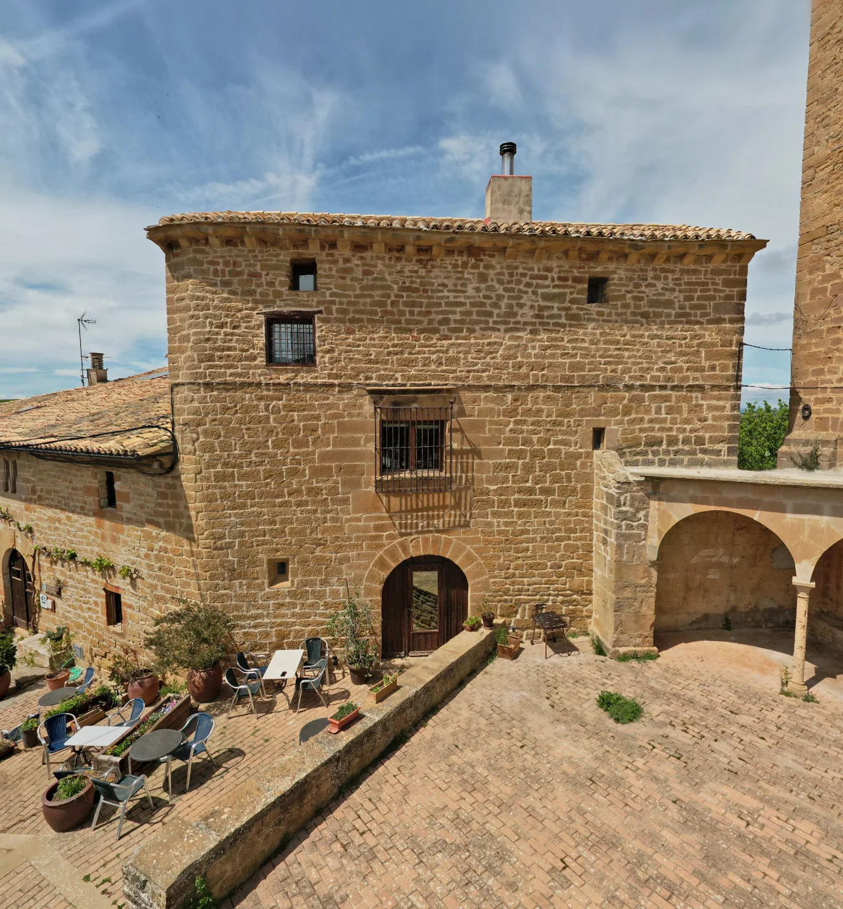
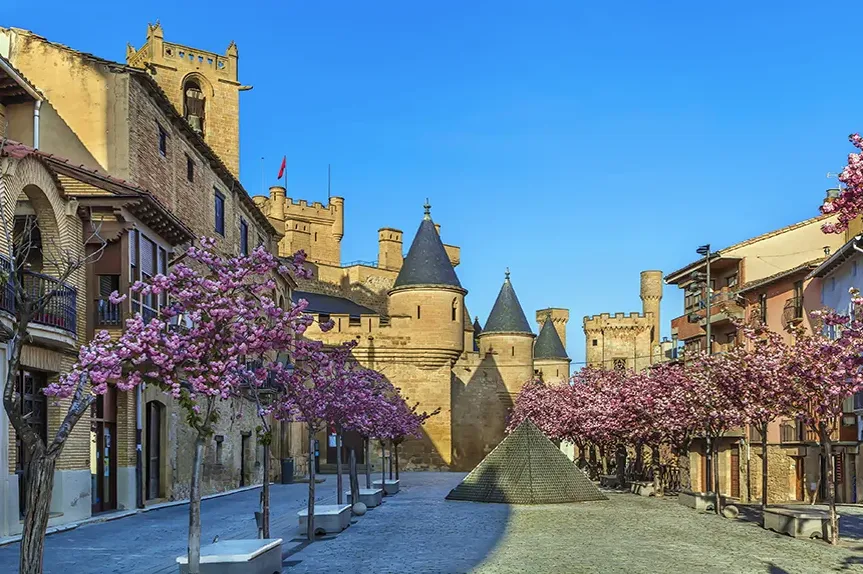
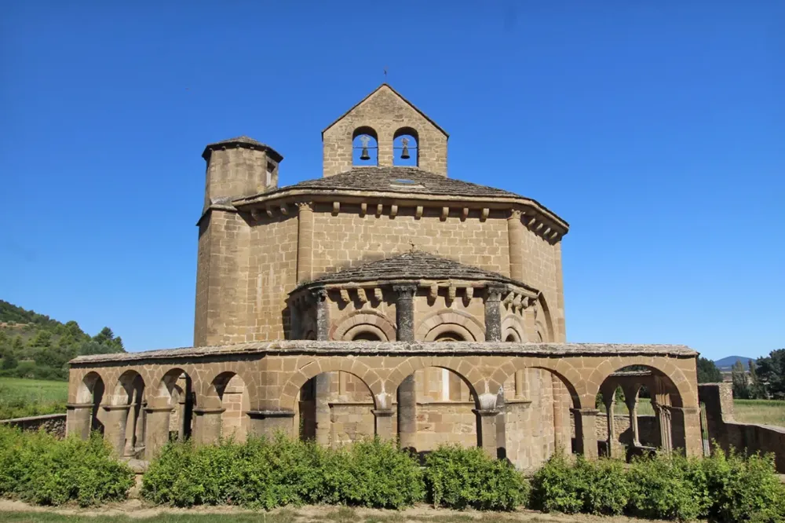
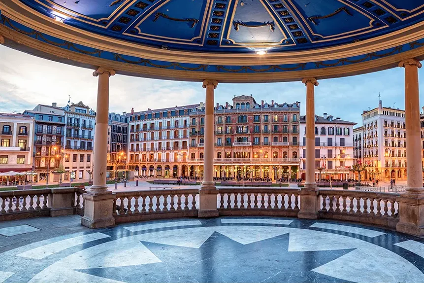
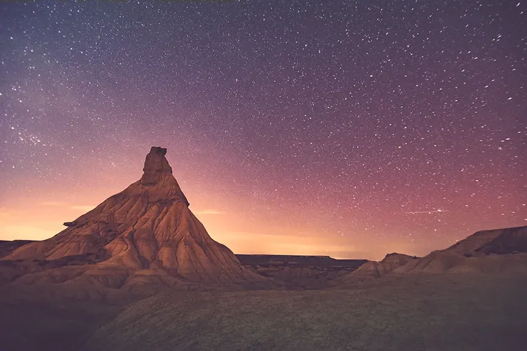
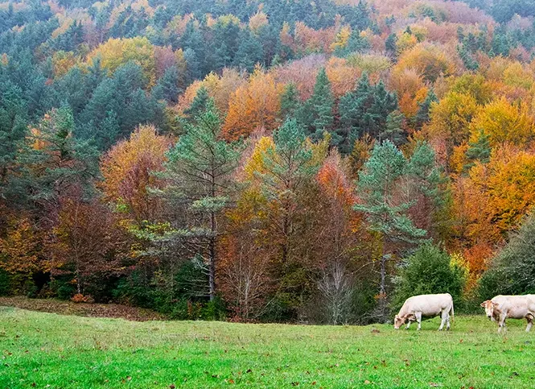
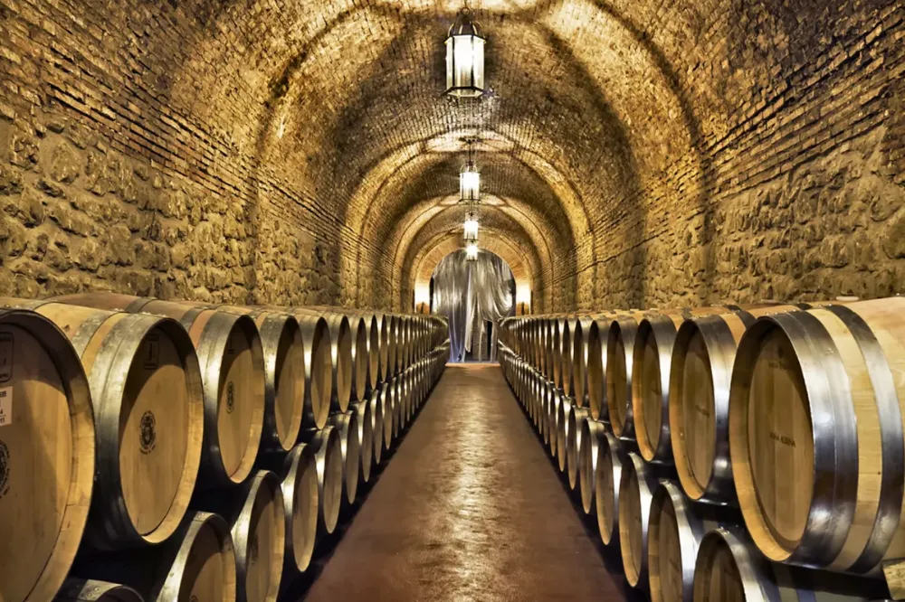
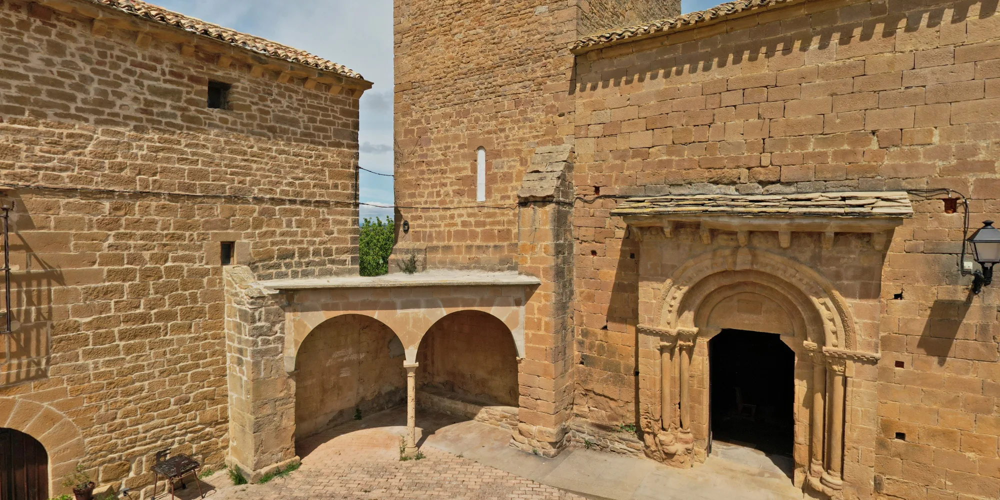
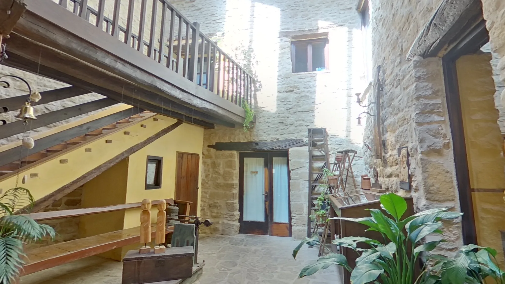

Palacio de Orísoain

Palacio de Cabo de Armería
Típico palacio de Cabo de Armería de la Navarra medieval restaurado artesanalmente. Junto a la iglesia y cripta románica de San Martín de Orísoain, forma un conjunto de alto valor histórico.
Situado en el pre-Pirineo navarro, en el valle románico de la Valdorba entre Pamplona y Olite, es un lugar céntrico y tranquilo para disfrutar de la diversidad de Navarra en cómodas rutas. Patrimonio, paisaje, bodegas al alcance de la mano.
Más informaciónLas estancias
La rehabilitación artesanal respetando los espacios originales ha permitido recrear singulares rincones y diferentes habitaciones, todas ellas con su singular encanto.
Ver las estancias
Doble Superior
Habitaciones exteriores de altos techos abuhardillados con vigas de madera. Uso individual y doble.
Ver habitación
Suite Loft
Salón integrado, ideales para dos y tres personas o viajar con su mascota (consultar condiciones).
Ver suite¡Importante! Se admiten reservas con niños de 12 años en adelante.






Patrimonio, naturaleza y bodegas
- Palacio Real de Olite21 km
- Santa Mª de Eunate22 km
- Pamplona29 km
- Desierto de las Bardenas75 km
- Selva de Irati150 km
- Bodegas Nekeas17 km
Desayunos y cenas
Navarra es una tierra de montaña y huerta: espárragos, alcachofas, pimientos o setas de temporada son nuestros ingredientes preferidos. La propuesta de la Casa es la de una cocina ligera donde el producto local sea el protagonista.
Ver servicios
«Repetimos porque el lugar invita a ello. La casa es súper acogedora y el trato es de 10.»
«El enclave perfecto si quieres descubrir la provincia de Navarra en un establecimiento con encanto huyendo de la capital.»
«Dormir en un lugar tan encantador teniendo al lado una iglesia románica y que Jesús nos hiciera una ruta guiada para nosotros fue muy mágico.»
«El hotel es bellísimo, cuidado en cada detalle: el estilo, la limpieza… ¡todo con un gusto exquisito!»
«Cómo ha podido coger un edificio histórico casi en ruinas y restaurarlo hasta su magnificencia actual es algo que roza la magia.»
«El desayuno, casero y muy completo, fue excelente.»
Opiniones de huéspedes publicadas en Booking.com
En el valle de la Valdorba
Calle Mayor, 3 · 31395 Orísoain (Navarra). Entre Pamplona y Olite, bien comunicado para visitar Tudela, Sangüesa o Puente la Reina.
- Palacio Real de Olite
- 21 km
- Santa María de Eunate
- 22 km
- El Cerco de Artajona
- 25 km
- Pamplona
- 29 km
- Ujué
- 32 km
- Estella
- 49 km
Recorre el palacio antes de llegar
El exterior junto a la iglesia de San Martín, las zonas comunes y el patio interior, en fotos panorámicas que puedes girar a tu gusto.
Ver la visita 360º